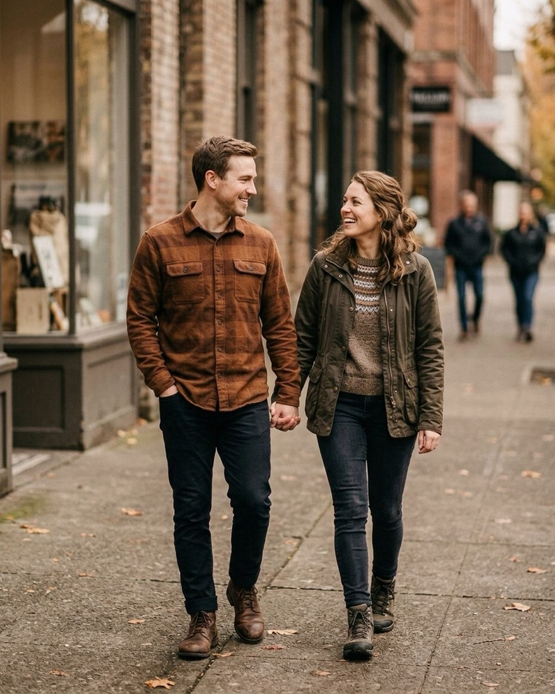
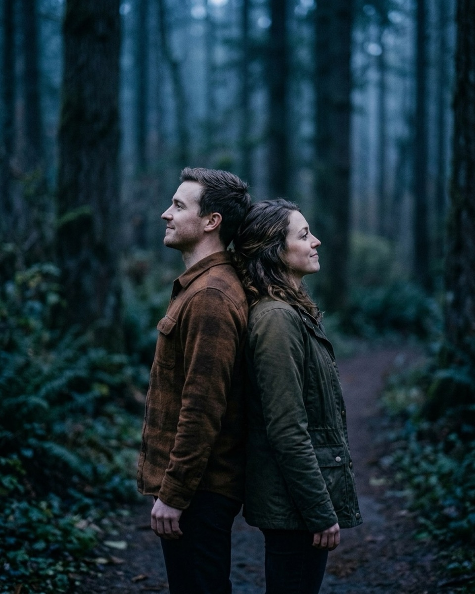
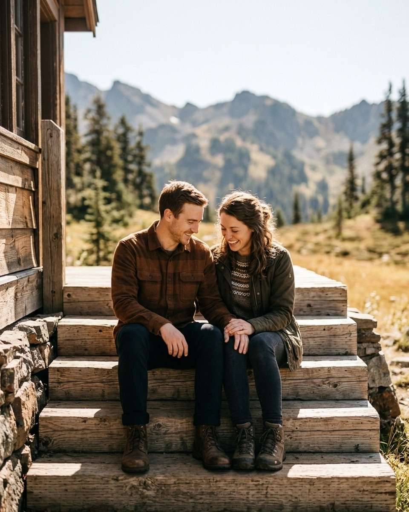
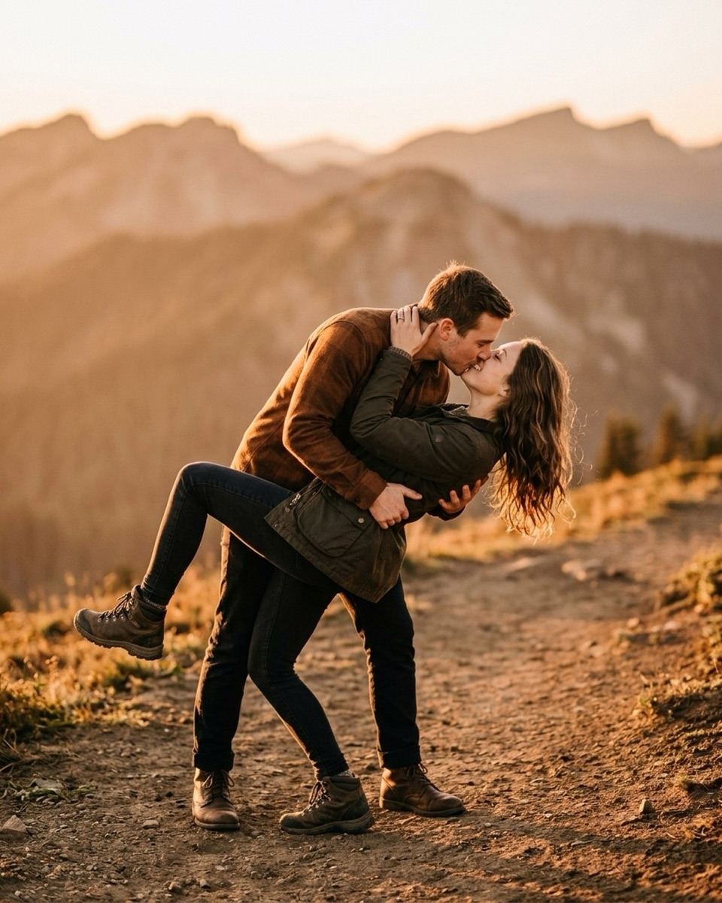
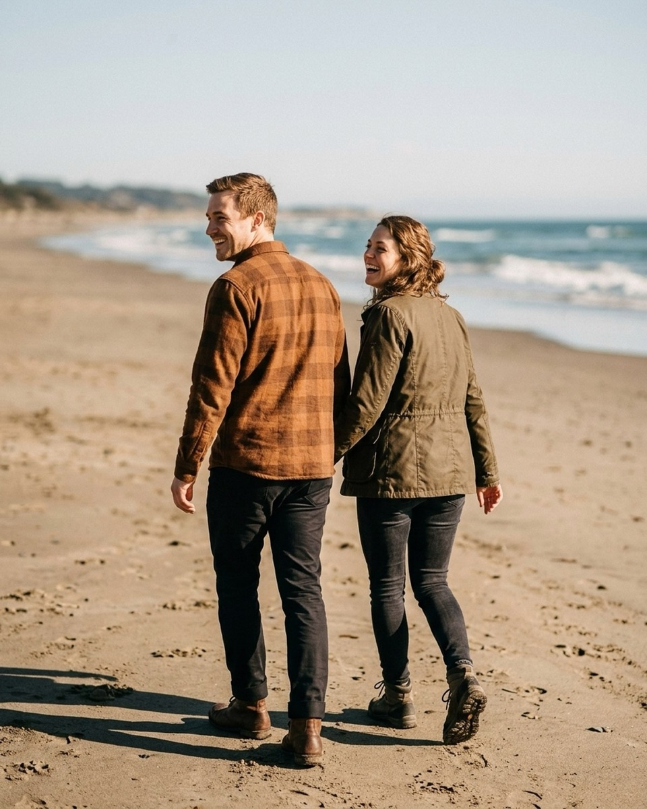

Engagement session scripts: a 60-minute session, prompt by prompt
A minute-by-minute script for a sixty-minute engagement session — what to say during the warm-up walk, the standing embrace, and the ring shot at the end, quoted straight from the Prompted catalog.
An engagement session is not really about the photographs. It is a rehearsal — the one time before the wedding day that a couple stands in front of a stranger with a camera and learns, low stakes, what it feels like to be looked at that way. They will remember it on the wedding morning, when the light is worse, the schedule is tighter, and nobody has patience left for direction. Which is why the script matters more than the location: a couple posed well on a parking lot sidewalk with the right words said at the right second will out-photograph a couple stranded in a gorgeous field with a photographer who only says "look natural." Below is a sixty-minute session, prompt by prompt, structured the way an actual shoot moves — a walking warm-up, standing close, seated and playful, golden hour, and the last frame — with every line quoted directly from the Prompted catalog. Every reference photo here is AI-generated; no rights-eligible engagement or couples photograph exists yet in the catalog, and real galleries are being added through the contributor program as photographers submit their own work.

0–10 minutes: walking, warming up
Start moving before you start posing. A couple who has just arrived is still carrying the drive over, the outfit changes, the small argument about parking — walking burns that off in a way that standing still in front of a lens never does, and it gives their hands somewhere to be without either of them thinking about it. Shoot wide, shoot loose, and don't worry yet about a perfect frame. You're not collecting the hero shot in the first ten minutes; you're teaching two nervous people that nothing bad happens when a camera is pointed at them.
It's okay to feel silly. Silly photographs beautifully.
Nervous clientFrom the pose "Walking hand in hand"
Say this before you've even lifted the camera, the moment you see either of them stiffen or force a smile. Have them walk side by side toward you, inner hands clasped at waist height, the outer hand of one partner tucked into a pocket — naming the awkwardness out loud usually dissolves it faster than pretending it isn't there.
Once they've settled into an actual walking rhythm — not a shuffle, a real stride — turn the direction around. Walking away from the camera reads differently than walking toward it: their guard drops because they think you're not really shooting yet, which is exactly the moment worth catching.
Whisper what you're actually having for dinner tonight.
PlayfulFrom the pose "Walk away look back"
Use it once the couple is a few strides ahead of you, one partner's hand resting at the small of the other's back. A mundane, specific question breaks any performed expression and gets a real laugh right as they turn their heads back over their shoulders.
Close the warm-up in an open space where they have room to actually move — a field or a wide path works better here than a tight sidewalk, because the goal is a loose, mid-stride laugh rather than a composed portrait.
Lean into them the way you do on the couch at home.
Nervous clientFrom the pose "Walking hand in hand field"
Say it mid-stride once their inside hands are already joined at hip height. It swaps an abstract posing note for a memory they already own, which is far easier for a nervous body to execute than any instruction about weight or angle.
10–25 minutes: standing, close
This is where most of an engagement session actually lives, and where a couple is most likely to freeze — no more walking to hide behind, no motion to occupy their hands, just two people standing close and being looked at directly. The fix is the same one that works on any stiff couple: give them a physical task instead of an emotional instruction. Point at a shoulder blade, a jaw, a blanket seam — never at a feeling. The full version of this approach, for the couple who locks up no matter what you try, is in what to say when a couple goes stiff.

There's no wrong way to do this. Stand close and I'll do the rest.
Nervous clientFrom the pose "Nose to nose"
Use it as you're bringing the couple chest to chest in profile, arms wrapping around each other's waist and shoulder before their noses touch. Taking the "am I doing this right" question off the table before they can ask it is usually the whole fix.
Settle in like the last minute of a slow song.
CalmFrom the pose "Back to back"
Say it once their spines and shoulders are pressed together in profile and both are looking off into the distance. It slows their breathing down along with the instruction, which is exactly the read you want from a quiet, held pose like this one.
Melt into them a little more with every breath out.
CalmFrom the pose "Blanket wrap"
Works once a blanket is already draped over both of their outer shoulders and cocooning them together. It gives a leaning partner a reason to keep sinking in over several frames instead of holding one static lean, which is where the best version of this pose usually lands.
Ignore the camera entirely. It's just a long walk with better light.
Nervous clientFrom the pose "Close slow sway"
Use it as one partner leans into the other's chest, face turned toward their neck or shoulder, eyes closed. It's a good line for the couple who keeps sneaking glances at your lens mid-embrace — it gives them permission to stop checking on you.
Want the fall mini session shot list?
About 25 poses grouped by family size, each with the words to say. Free PDF.
One email to confirm, one with the PDF. Unsubscribe any time.
25–40 minutes: seated and leaning, playful
By now the couple has spent twenty-five minutes learning that a camera pointed at them doesn't hurt, and their energy usually needs a reset before it flags into boredom. Sitting them down does two things at once: it changes the shape of every frame after a stretch of standing poses, and it gives you a natural excuse to bring the mood back up with something sillier than what came before. Real laughter, not a held smile, is the target here.

Bump hips on every third step. I'll count.
PlayfulFrom the pose "Bench snuggle field"
Use this once the couple is seated close on a bench, one leg crossed toward the other, faces already near. Counting the beats out loud yourself turns a static seated pose into a small game, which reads as movement even though nobody actually stands up.
Walk toward me and whisper something you'd get in trouble for saying.
PlayfulFrom the pose "Stair sit"
A good line once both are seated on the steps, upper bodies turned inward toward each other. Whichever partner goes first almost always breaks the other one's composure completely — that unguarded reaction is the frame worth keeping.
Do your handshake. Every couple has one — if not, invent it now.
PlayfulFrom the pose "Stair sit mountain"
Use it with a couple whose energy has started to dip, seated close with joined hands resting on a knee. Inventing a handshake on the spot is the kind of low-stakes silliness that photographs as pure, unforced joy.
Tell them the exact moment you knew.
RomanticFrom the pose "Bench snuggle"
Close the block with something quieter. Say it once they're seated close on the bench, heads tilted inward — a real memory takes over their face in a way no direction ever could, and it's a good bridge into the softer light coming next.
40–55 minutes: golden hour (or blue hour), romantic
Whatever the light is doing at this point in the session — the last warm hour before sunset, or the flat blue calm just after it — this is the stretch to slow everything down and let the poses carry more weight than the words do. A couple who has spent forty minutes learning the routine no longer needs constant direction; short, quiet lines work better here than a running commentary. For the mechanics of shooting into low, changing light itself, see golden hour prompts.

Look at their lips, then their eyes. Take your time.
RomanticFrom the pose "Dip kiss"
Say it slowly, and mean the pacing yourself, as you support one partner into a deep dip against a mountain backdrop. A deliberately slow instruction gives the couple permission to move slowly too, instead of rushing the moment to get it over with.
Hold their face like you're about to say something important.
RomanticFrom the pose "Close slow sway mountain"
Use it once the couple is standing close in profile, hands clasped between their chests. It gives an otherwise still pose a sense of anticipation, which reads as intimacy rather than posing for the camera.
Come in for the kiss — but stop one inch short and stay there.
RomanticFrom the pose "Nose to nose field"
A good line once their faces are already close enough that their noses are nearly touching. Holding the almost-kiss instead of completing it keeps both faces visible to the lens, and the anticipation on both faces is usually more striking than the kiss itself would be.
Think about tomorrow morning, nothing else.
CalmFrom the pose "Silhouette kiss"
A quiet closer for backlit or silhouette setups where fine expression barely registers against the light anyway. It shapes posture and breathing more than the face, which is exactly what a clean silhouette needs from its subjects.
The last 5 minutes: the ring, the last frame
Save the last few minutes for the smallest, quietest frames — the ones a couple will actually print. By this point in the session, the fear that made them stiff in the first ninety seconds has had nothing left to attach itself to for a while now, which is exactly why the last frames tend to be the loosest of the whole shoot — the same idea behind the closing section of what to say when a couple goes stiff.

Hold both their hands and press them to your chest.
RomanticFrom the pose "Hand kiss field"
Use this once one partner has raised their hand between them and the other is bowing their head to kiss the back of it. It's the natural frame for the ring itself — the raised hand is already doing the work, this line just slows the moment down enough to actually catch it.
Nose to nose. Now smile without pulling away.
RomanticFrom the pose "Walk away look back beach"
Save this for the actual last frame of the session, once the couple has been walking away from you down the shoreline and turns back over their shoulders. It's a good note to end on precisely because it asks for nothing performed — just proximity and an honest reaction.
What to tell them for the wedding day
Before they leave, tell the couple plainly what this session was actually for: everything you just asked them to do — the walking, the hand on a shoulder blade, the almost-kiss held an inch short — is the same vocabulary you'll use on the wedding day, just compressed into ten minutes instead of sixty and squeezed between a ceremony and a reception. They won't have time to relearn it that morning, and they won't need to, because their bodies already know it. Remind them that the goal was never a perfect pose; it was a couple who no longer flinches when a lens is pointed their way. Tell them that on the wedding day, when things are rushed and everyone is watching, you'll be reaching for the exact same short, physical lines — not "relax," not "act natural," but a hand, a breath, a direction to look. That's the whole rehearsal, and it's why the session mattered more than the location ever did.
The Fall Mini Session Shot List
About 25 poses grouped by family size, each with the words to say. A free PDF, sent once you confirm your address.
One email to confirm, one with the PDF. Unsubscribe any time. No selling, no sharing.
Every prompt in this guide is in the app, with the pose it belongs to.
Prompted is the posing app that is only a posing app: 250+ poses, each with word-for-word prompts in four tones, filtered to the light you're standing in. The sun tracker is free forever.
Get Prompted on the App Store